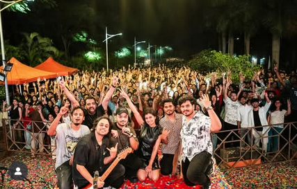
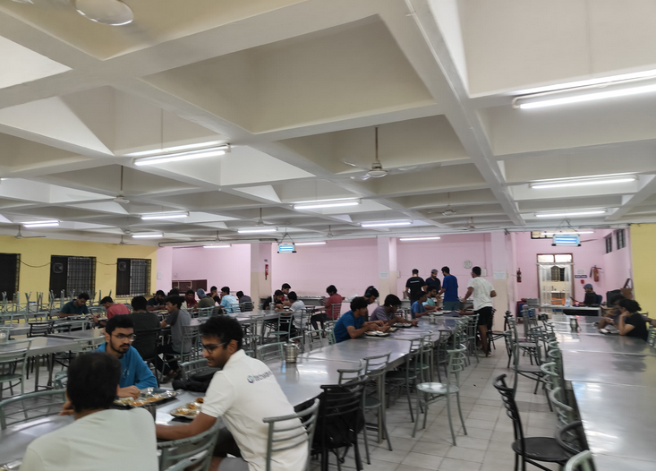
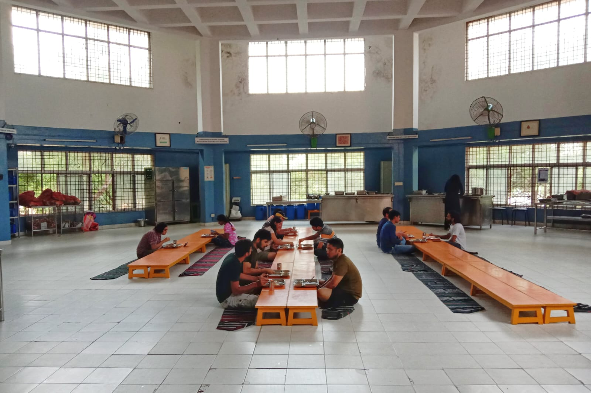
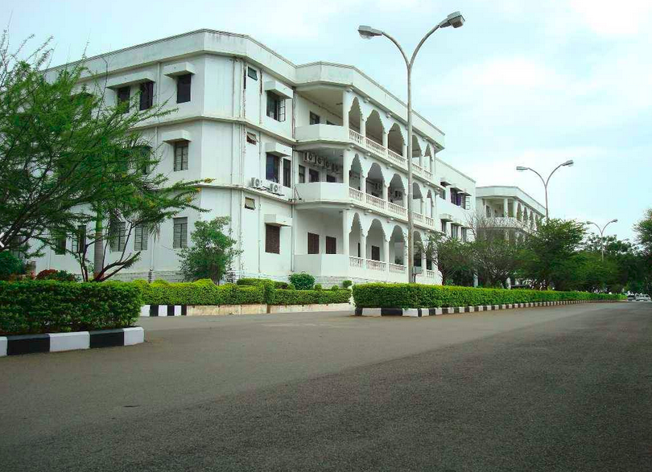
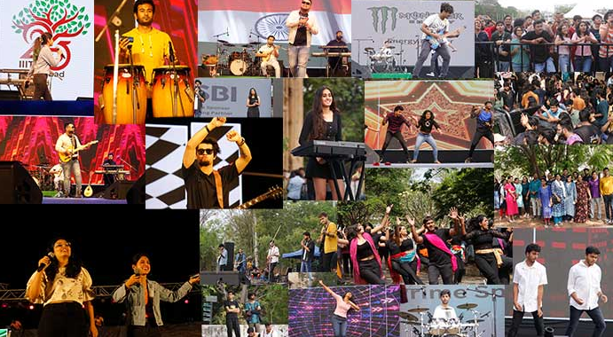

Symbiosis Institute of Technology (SIT), Pune, established in 2008 under Symbiosis International University, is a premier destination for engineering education. The institute blends strong academic foundations with modern, industry-relevant learning, ensuring students are equipped with both technical expertise and practical skills.
The campus at Lavale is equipped with state-of-the-art laboratories, smart classrooms, a central library, hostels, sports facilities, and a vibrant student community. Along with academics, SIT emphasizes innovation, research, and global exposure through internships, exchange programs, and collaborations with industries and universities worldwide.
Student life at SIT goes beyond classrooms, with a wide range of technical, cultural, and literary clubs. Events like Techtonic and Reverb showcase talent and creativity, while hackathons, workshops, and leadership forums encourage problem-solving and innovation. This unique blend makes SIT Pune a hub of knowledge, growth, and holistic development.
AcademicsAcademics at SIT Pune are designed to balance strong theoretical foundations with hands-on learning. The curriculum is industry-oriented, supported by modern laboratories, research opportunities, and project-based assignments that encourage innovation and problem-solving. Regular workshops, guest lectures, and collaborations with companies ensure that learning stays practical, relevant, and future-ready.
ReverbReverb is the annual cultural festival of Symbiosis Institute of Technology, Pune, and one of the most vibrant celebrations on campus. The fest is a blend of music, dance, drama, art, fashion, and literary events, giving students an exciting platform to showcase their creativity and talent. With participation from colleges across Pune, it creates an atmosphere of energy, enthusiasm, and cultural exchange.
Beyond competitions and performances, Reverb also features pro-shows, concerts, and celebrity appearances that make the nights unforgettable. It is more than just a festival—it is a celebration of youth, creativity, and togetherness that strengthens the cultural spirit of SIT.
The Institute has seven hostels. There are three blocks of girls and four blocks for boys. The hostel rooms are spacious with natural light and ventilation. Each room has an attached toilet and bathroom. Each student is provided with a steel cot, a study table and chair and a mattress.
Security:
The following arrangements have been made to ensure the security of the inmates of the hostels:
Security check at the main gate of each Hostel.
Lady guard at girls hostels, round the clock.
Surveillance video camera at entrance of all hostel buildings.
Hostel Room Amenities
Wi-Fi Internet Facilities: All hostels have secure Wi-Fi internet connectivity, through high end firewall.
TV Lounge:Common TV lounge with cable connection on the ground floor of each hostel building.
Symbiosis Institute of Technology, Pune, has two well-managed mess facilities that cater to the daily dining needs of students residing on campus. Both messes serve nutritious, hygienic, and freshly prepared meals, offering a balanced mix of vegetarian and non-vegetarian options. Along with the mess facilities, multiple canteens and food outlets around the campus provide a variety of snacks, beverages, and quick bites throughout the day. These spaces not only ensure diverse food choices but also serve as popular hangout spots where students can relax, socialize, and enjoy campus life.
North Mess  Yuktahaar Mess The messes at IIIT-H are committed to maintaining the highest standards of cleanliness and hygiene to ensure student well-being. Each mess follows a rigorous cleaning schedule, including daily disinfection of dining and kitchen areas and weekly deep cleaning of all facilities. Staff are required to adhere to strict personal hygiene protocols, wearing clean uniforms, hairnets, and gloves, with regular health check-ups to ensure fitness for duty. Fresh, high-quality ingredients are sourced, and proper storage facilities are maintained. Regular pest control and effective waste management practices, including segregation and recycling, are in place. Periodic inspections ensure compliance with these standards, providing students with a safe and hygienic dining environment.
Mess TimingsBreakfast: 7:30 AM - 10:00 AM
Lunch: 12:00 PM - 2:30 PM
Snacks: 5:00 PM - 6:00 PM
Dinner: 7:30 PM - 10:00 PM
Alongside this, the campus has multiple canteens at different locations around campus, each popular for their own specialities. For example, you would soon find yourself very familiar with the famous Juice canteen which is one of the most popular spots for hanging out with friends! Or you could chill out with a sandwich and tea near the basketball court canteen!
Vindhya Canteen (VC)Conveniently situated around classrooms, the library, workspaces, and labs, VC attracts professors and students alike. Known for its tea, coffee, puffs, omelettes, and sandwiches, it also offers secret menu items like pav bhaji and papdi chaat. Although the food quality is excellent, some students find the pricing a bit high. The beautiful sitting area, especially lively during rains, makes it a popular spot for events.
Basketball Canteen (BBC)Located near the hostels, BBC is a favorite for breakfasts and quick snacks. Known for its dosa and Maggi, the variety of combinations available keeps the menu interesting. The seating arrangement is ideal for relaxing with friends, and its proximity to the amphitheatre means it stays open late during events.
Juice Canteen (JC)Best known for its oreo shake, JC also offers seasonal favorites like the avocado honey shake and the timeless watermelon with extra ice. Nimbu soda is another iconic item on their menu.
Devid's BakeryOpen from 4 PM to 4 AM, Devid's Bakery is the most reasonably timed canteen on campus. Despite being slightly overpriced, their ice cream brownie is worth trying. It's the only place open past 2 AM.
TantraIdeal for those who miss regular meals, Tantra offers meal-sized portions. Its menu, though with some amusing typos like "chicken moms," provides substantial meals to satisfy hunger.
Ministry of CheeseA small stall near VC known for cheesy fries, nuggets, and quick bites—perfect for snack lovers.
Tea & Coffee StallLocated beside Tantra, ideal for a quick cup of chai or coffee after meals or during late-night study sessions.
Sri Akshaya Food CourtLocated opposite VC, offers Indian snacks like pav bhaji, pani puri, idli and vada pav.
BBInstantApart from the canteens BBInstant provides with crisps, soda and fizzy drinks, biscuits and packed deserts right in the hostel premises for the students 24x7
The campus is spread over a sprawling area of 66 acres. There are four buildings that house the corporate schools and research centers. In addition to this, the academic building has lecture halls, tutorial rooms, computer and electronics labs and offices for the administration and faculty. The buildings are named after the mountain ranges - Nilgiri, Vindhya and Himalaya.
The Amphitheatre, Juice canteen and the Felicity Ground are common spots around the college for students to enjoy the open air. We believe in keeping our campus clean, green and pollution-free. All roads on campus are lined with trees on both sides and there are garbage bins at every corner.
Hyderabad experiences a generally moderate climate, with winters that are comfortably cool and rarely dip below 10–12°C, making the season pleasant and easy to manage. Summers, particularly in April and May, can become quite hot, with average highs reaching 38–40°C and occasionally soaring above 42°C during heatwaves. Fortunately, the school summer break aligns with this period, offering respite from the intense heat. Overall, the city enjoys a balanced climate for most of the year, with only a few weeks of extreme temperatures.
IIIT-H is a small but diverse community and it's not very difficult to find people who share the same interests as yours. Therefore, there are a number of small clubs formed by enthusiasts who are passionate about the same things. We have clubs ranging from Music, Dance, Quizzing, Literary and Design to Programming and Open Source Development, all of which hold regular meetings and activities. And the best part is that if you want you can start your own clubs. There are no restrictions and all you need is loads of enthusiasm and passion to build a club of your own.
Right from your first day, each student is assigned to a house at IIIT-H. There are 4 houses - Aakash, Agni, Prithvi and Vayu. Each year the houses compete in a year-round competition which involves various cultural and sports activities.
It starts with the Fresher’s Night where the newcomers in each house put up a cultural show to compete for their house’s glory. The Fresher’s Night also includes Flair, an event which tests the individual participants in all their cultural and character traits, ultimately culminating in the crowning of the coveted titles of Mr. Fresher and Ms. Fresher.
Besides Freshers’ Night, IIITH also has some exciting cultural events, like Octave, an inter-house music competition where students show off their singing and instrumental skills in front of a pumped-up crowd and Cult Night, the grand finale of all house activities — a high-energy dance showdown where each house puts on themed performances, battling it out for the prestigious rolling trophy. Both nights are packed with fun, creativity, and unforgettable moments that bring the campus alive.
Sports in IIIT-H are a year-round phenomena. Throughout the Monsoon semester, you have inter-house sports competitions, in hopes to win the house cup.
This includes sports like track, basketball, cricket, football, table tennis, volleyball and tennis. Juniors and seniors play on the same team, which leads to great bonds being formed. This takes a turn during Spring semester, where the sports competitions are inter-batch. Batches form their own teams, and this time they play for pride. By the way, the adjacent Gachibowli stadium has Olympic grade swimming facilities.
We understand that college can become stressful at times. Staying away from home, and the academic pressure and take over sometimes. To overcome such low moments, IIIT-H also offers a free of cost counselling facility with the college counsellor. Anyone can avail this facility.
Programme Coordinator:
Dr. Bhaktee Dongaonkar (bhaktee.dongaonkar@iiit.ac.in)
Counsellors:
Ms. Bhavani Pullabhatla (bhavani.p@iiit.ac.in)
Dr. Kiranmayee Bapi (counsellor.kiranmayee@iiit.ac.in)
Tanushree Mustafi (tanusree.mustafi@iiit.ac.in)
Admin Officer:
Nadeem Hussian
Contact No.: +91 93916 33138
There are also student volunteers that the students can reach out to
Email: well-being.volunteers@iiit.ac.in